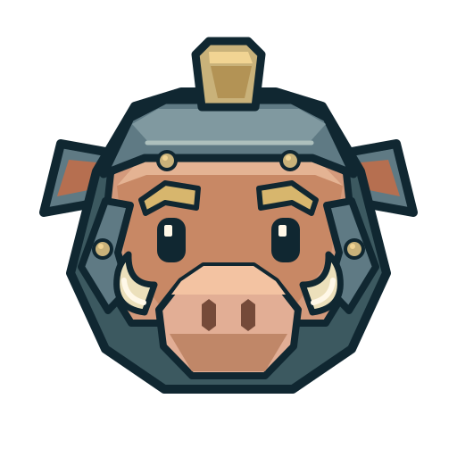
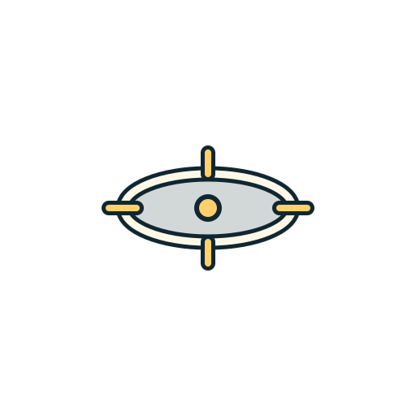
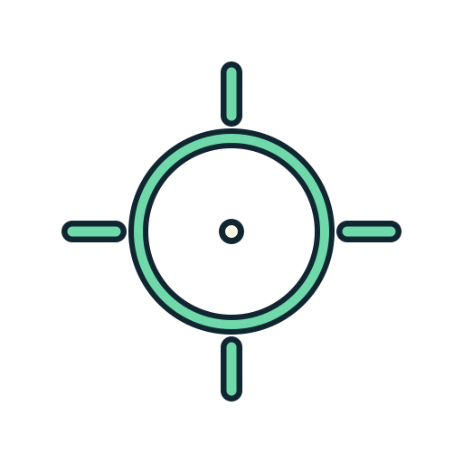
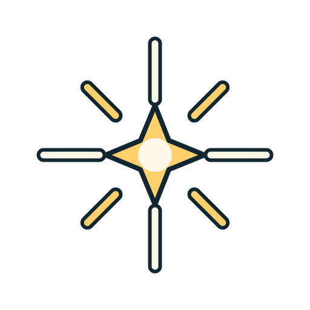

בטווח18 מ׳
אי החזיריםלכוון. לדייק. לפגוע.
מסלול חזוינוגעים בחוף כדי לכוון
אותה שפה, בכל שכבה
ערכת הכוונון
17 נכסים · SVG ו־PNG שקוף
256 × 256 / 512 × 512
רקע
תצוגת עיצוב נפרדת. המרחק מחושב כאן ביחס לטווח הדגמה של 40 מ׳; את החיזוי והטווח בפועל מספק המשחק בזמן החיבור.